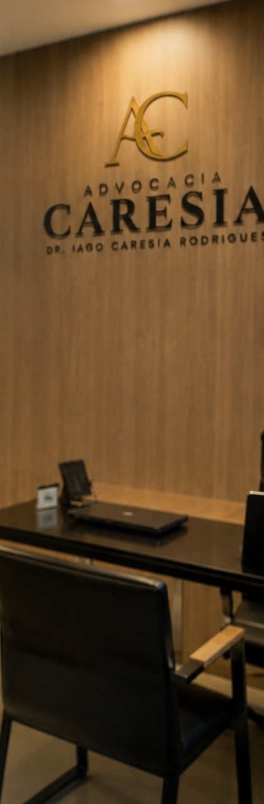
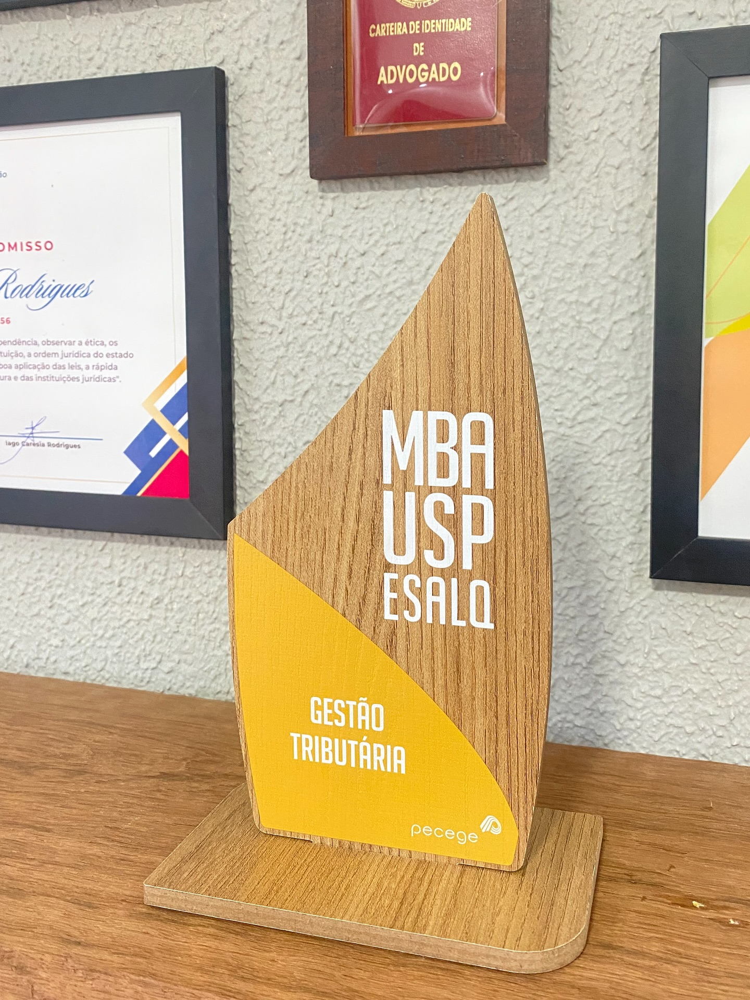

(15) 98819-8826R. Santa Cruz, 1188 · Centro · Tatuí/SPFalar no WhatsApp
Advocacia Caresia · Tatuí/SP
Estratégia jurídica com rigor técnico e atendimento próximo.
Escritório especializado em Direito Tributário (MBA USP/ESALQ), com atuação cível e trabalhista para pessoas e empresas de Tatuí e da região de Sorocaba. Atendimento presencial e online.
Especialista em Direito TributárioMBA em Gestão Tributária · USP/ESALQ
OAB/SP 482.856Dr. Iago Caresia Rodrigues
MBA USP/ESALQGestão Tributária
Relatórios mensaisVocê acompanha cada processo
Tatuí e regiãoPresencial e online

“O direito não é um simples conceito, mas uma força viva.”Rudolf von Ihering
01 — O escritório
Uma advocacia estruturada para acompanhar você.
Para acompanhar as exigências do mercado, adotamos uma estrutura digital que permite um atendimento realmente personalizado. Nossos clientes são mantidos informados com atualizações semanais sobre temas jurídicos de interesse e relatórios mensais claros e detalhados sobre seus processos.
Atendimento presencial em Tatuí e online
Relatórios mensais do andamento do processo
Comunicação direta com o advogado
Ética, dedicação e responsabilidade
Dr. Iago Caresia RodriguesOAB/SP 482.856

Especialização
Conhecimento tributário aplicado ao seu caso.
O Dr. Iago é especialista em Direito Tributário e concluiu o MBA em Gestão Tributária pela USP/ESALQ. A formação traz uma visão estratégica para empresas e pessoas físicas: planejar a carga tributária, reduzir riscos e agir dentro da lei.
Auxiliamos empresas e pessoas físicas na gestão e no planejamento tributário, com soluções que reduzem riscos e otimizam a carga tributária, sempre em conformidade com a legislação.
Atuamos na resolução de conflitos e na proteção de direitos patrimoniais e contratuais, com foco em resultados rápidos e eficazes, na esfera judicial ou extrajudicial.
Prestamos consultoria preventiva e atuamos em litígios trabalhistas, defendendo os interesses de empresas e trabalhadores com compromisso e excelência.
Atenção a golpes. A Advocacia Caresia nunca solicita pagamentos via PIX ou transferências para liberar valores de processos. Em caso de dúvida, ligue para (15) 98819-8826.